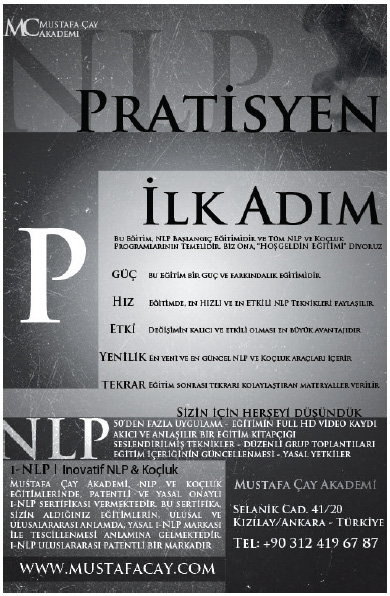
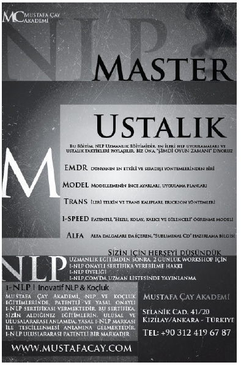
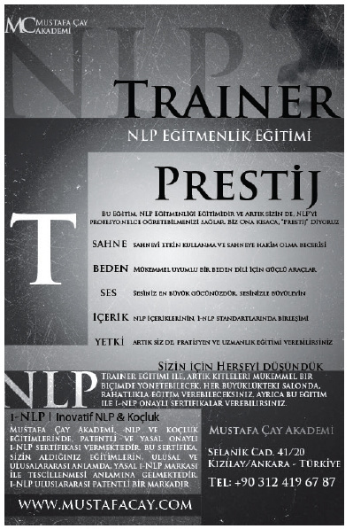
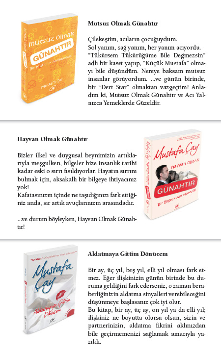
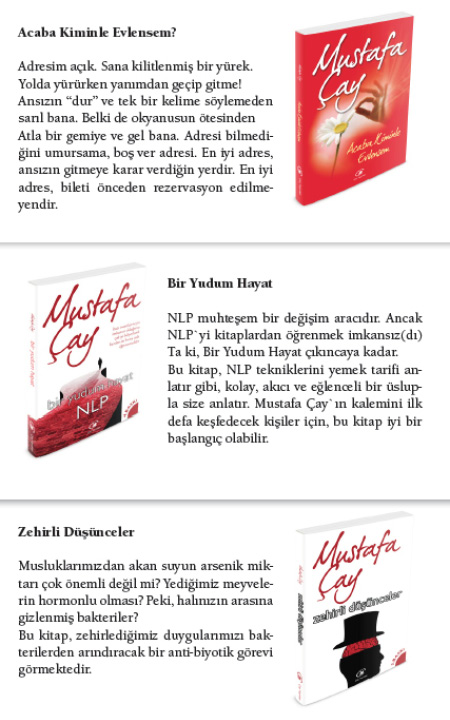
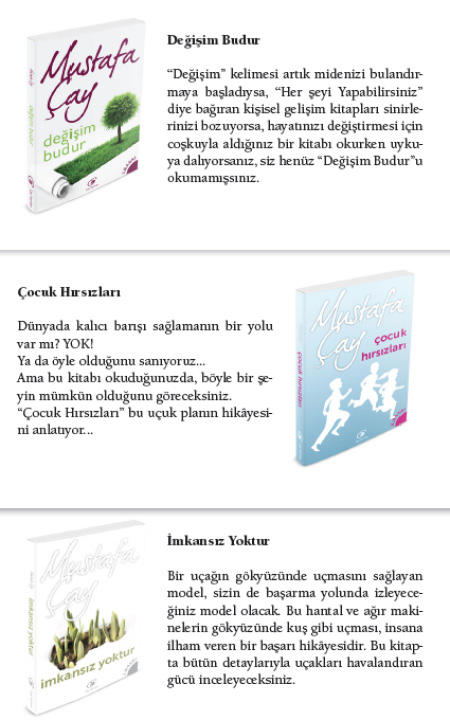
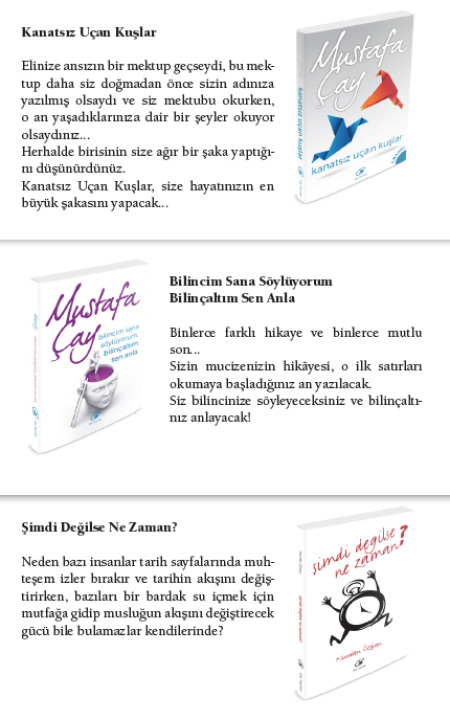
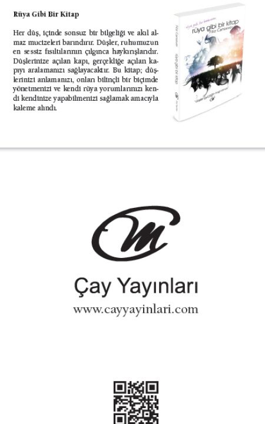

Beynin Sağlığı ve Enerji Kaynakları
Beyin etkin biçimde çalışabilmek ve gerektikçe kendisini onarabilmek için sürekli bir enerji kaynağına ihtiyaç duyar. Beyin çalışırken elektrokimyasal enerji tüketir.
Beyin, enerjisini üç yolla sağlıyor. Bunlar;
- Oksijen
- Su
- Glikoz’ dur.
Oksijen:
Yiyecek olmadan birkaç hafta, su olmadan birkaç gün yaşayabilirsin. Ancak beynin en temel ihtiyacı olan oksijen olmadan, birkaç dakikadan fazla yaşayamazsın.
Canlılık ve gençliğin, daha sağlıklı bir cilde kavuşmanın, ana sırlarından birisi temiz kan dolaşımıdır. Bunu elde etmenin en kolay yolu da doğru nefes almaktır.
Gençleşme sürecinizi başlatan doğru nefes %90-95 saflıkta oksijen solumak demektir.
Çevresel ve daha birçok nedenden dolayı, soluduğumuz havada düşen oksijen konsantrasyonu ve artan zehirli gazlar sonucu yeterince oksijen alamıyor ve yeterince karbondioksit veremiyoruz. Böylece beynimiz oksijene aç ve fazla toksinle yüklü kalıyor. Dokularda cansızlık artarak, yaşlanma hızlanıyor ve bağışıklık sistemimiz bozuluyor.
Beyin ve Oksijen İlişkisi:
- Yeterli oksijen alamazsak zihinsel bulanıklık, negatif düşünce, depresyon, işitme ve görme bozuklukları başlar.
- Yaşlılar ve damar tıkanıklığı olanlar beyinlerine yeterli oksijen gitmediğinden genellikle negatif ve depresif olurlar.
- Akut bir dolaşım bozukluğunun kalbe giden oksijeni durdurması kalp krizi, beyne giden oksijeni durdurması da felç ve beyin kanamasına yol açar.
- Oksijen yetersizliği, özellikle oturarak çalışan insanların kendilerini sürekli yorgun hissetmelerine, sinirli ve verimsiz olmalarına, uyku düzenlerinin bozulmasına neden olur.
- Eğer bedenimiz fazla yağ biriktirmişse, bu durum vücudumuzda fazla hidrojen olduğu anlamına gelir. Bu da oksijenin az olduğunu gösterir. Çünkü kimyasal olarak oksijen, hidrojeni suya ve enerjiye dönüştürür.
- Yeteri kadar oksijen alamamak da şişmanlığı beraberinde getirir. Çünkü yeterli oksijen alamayan insanların metabolizmaları yavaştır. Buna karşın spor yapan insanlar doğal yolla zayıflar, çünkü egzersizler esnasında alınan oksijen miktarı artar. Oksijen olmadan ateş yanmaz, yağın yanması için de oksijenin vücuda yoğun olarak girmesi sağlanmalıdır.
- Vücuttaki kanın kalitesi, artmış olan oksijen oranıyla doğru orantılıdır. Besinler daha iyi emilir ve sindirilir. Mide gibi sindirim organları daha verimli ve sağlıklı çalışır.
Doğru nefesle; beyin, omurilik, sinir merkezleri ve sinirler olmak üzere sinir sisteminin performansında düzelme sağlanır. Sinir sisteminden tüm vücuda sağlık yayılması gerçekleşir. Vücudun salgı bezlerinde gençleşme görülür. Cilt pürüzsüzleşir ve kalbin yükü hafifler. Oksijen alan bir beyin daha etkin çalışır. Etkin çalıştıkça yeni öğrenme yolları oluşturur. Beyindeki bu yeni öğrenme yolları da zekâ gelişimi olarak bireye yansır.
Doğru nefes almakla beden ihtiyacı kadar oksijeni alabilirken, beynin her iki yarısı da eşit miktarda yararlanır.
Oksijen İçin Doğru Nefes Egzersizi:
1- Sanki karnında, göbeğinin altında bir oyun balonu varmış gibi düşün. Burnundan aldığın uzun süreli nefes ile bu balonu olabildiğince şişir.
2- Nefes aldığın sürenin 2 katı süre ile nefesini içinde tut.
3-Nefes aldığın sürede ağzından nefes vererek hayali balon tümüyle sönünceye kadar ciğerlerini boşalt.
Su:
Beyindeki su oranı diğer organlarımızdaki su oranından daha yüksektir. Beynimizin % 80 i sudur. Bu nedenle beynimiz susuzluktan en çabuk etkilenen organımızdır. Beyindeki hareketi, enerjiyi sağlamak için oluşan, biyolojik ve kimyasal değişimlerin tümü su ile sağlanır. Hipotalamus bölgesindeki hipofizden salgılanan vazopressin denilen bir hormonla düzenlenir.
Sadece hayatı sürdürebilecek kadar su içmek sağlıklı yaşam için yeterli değildir. Birçok insan yeterli sıvı aldığını düşünür ama bu doğru değildir. Çünkü alkol, gazoz, kola,şekerli meyve suları gibi meşrubatlarla su ihtiyacının karşılandığı düşünülmesine karşın tümü de sıvı kaybına yol açar. Benzer biçimde enerji içecekleri ve bira gibi su kaybettiren osmotik yükü fazla sıvılar da bedende hızlı sıvı kaybına yol açarlar. Bu sıvılar dudak kuruluğunu geçirdikleri için beyindeki su bileşimi bozulur. Bu süreçte susuzluğunu hissedemezsin.
İnsan midesinin ayakta ve oturur durumdaki pozisyonu farklıdır. Ayakta duran bir insan eğer sıvı gıda içerse doğrudan doğruya onikiparmak barsağına geçer. Midenin küçük eğriliğine uyan kısmında Waldeyerin mide caddesi denen bir oluk bulunur. Sıvı gıdalar bu yolu takip ederek zaten devamlı küçük bir açıklığı olan mide çıkışını (pilor) geçerek 12 parmak barsağına (duodenum) geçer.
Eğer insan suyu ve sıvı gıdayı oturarak içerse bunlar önce midede birikir asitle karışarak mikropları öldürür ve sonra 12 parmak barsağına geçer. Oturarak su içme kuralına uymakla insan kolera da dâhil birçok hastalıklardan korunmuş olur.
Mayo Clinic araştırmasının sonucuna göre; su beynin yakıtıdır. Su içilmediğinde yorgunluk, deride kuruluk, sinirlilik, sindirim güçlüğü, tuvalete çıkamama, terleyememe, kan akışkanlığında azalma, besinlerin sindirilmesinde güçlüğe bağlı hazımsızlık, böbrekte süzme işleminde yavaşlama, kalpte sorunlar ve en önemlisi solunumda yavaşlama gözlendiği biliniyor.
Eğer susuzluk uzun sürerse kademeli olarak yaşamsal faaliyetler duruyor ve organ iflasları olduktan sonra ölüm gerçekleşiyor. Ancak yaşamsal sıvı hayattayken en büyük etkiyi beyinde yapıyor. Vücutta suyu en çok tutan organ olan beyinde sinir iletimi için gerekli olan elektriksel akımı sağlamada su temel unsurdur. Beyinde su yeterli kapasitede bulunursa daha hızlı düşünme, konuya daha dikkatli bir şekilde odaklanma ve en önemlisi çözüm üretmede başarı sağlanıyor. Mayo Clinic’ten verilen bilgilere göre bunu sağlamak için günde 7-12 su bardağı su içmek yeterlidir.
Beyin ve Su Bileşiminin Önemi:
- Suyun içerisindeki minaraller sinir iletiminde önemli bir görev yapıyor. Beyinde, hormon ve nörotransmitter denilen sinir iletimini sağlayan bileşenlerin de sentezlenmesini düzenliyor. Bu da beyin fonksiyonlarının devamlılığını olumlu yönde etkiliyor.
- Bebeklikten yaşlılığa yaşam boyu düzenli su içmenin hafızayla ilgili hastalıklara karşı da koruyucu olduğu biliniyor. Özellikle yaşlanma sürecinde suyun yeterli alınmaması depresyon, kısa süreli bulanık bellek sendromu ve demans hastalıklarına davetiye çıkarıyor.
- Beynin toksinlerini atabilmesi, berrak bir ortam yaratabilmesi için yeterli su içiminin sağlanması gerekiyor.
Glikoz:
Kan şekerimiz düşerse, beyin çalışmaz. Sıkça ama daha az yemek, kan şekerini sabit tutmak için önemlidir. Kan şekerini sabit ve yüksek tutmak, beynin tam kapasiteli çalışmasını sağlar. Beyin, kan şekeri seviyesini korumak için açlık hissini oluşturur ve açlık giderilinceye kadar vücutta depolanan diğer enerji kaynaklarının kullanılmasını sağlar.
Beyin ve sinir sistemi normal koşullarda enerji ihtiyaçlarını karbonhidratlardan karşılar. Bazı karbonhidratlar besinlerde doğal olarak bulunurlar. Bunlar meyvelerde fruktoz, sütte laktoz, tahıllarda nişastadır. Bazıları ise sonradan ilave edilirler. Bunlar, sofra şekeri ve şeker içeren besinlerdir. Vücut bu iki farklı şeker kaynağını ayırt edemez.
Şeker formundaki karbonhidratlar kolayca sindirilerek hızlı bir şekilde kana karışır. Nişasta formundaki karbonhidratlar ise çok sayıda molekülden oluştuklarından dolayı karmaşık yapıdadırlar. Bu yüzden sindirimleri ve kana karışmaları için zaman gerekir.
Vücut, kan şekerinin tümünü aynı anda enerjiye çeviremez. Kan şekeri düzeyi normalin üzerine çıktığında; pankreastan salınan insülin hormonu, fazla şekerin depolanması için karaciğer, kas ve diğer hücreleri uyarır. Glikozun bir kısmı, kas ve karaciğerde glikojen şeklinde depolanır. İhtiyacından fazla enerji tüketimi durumunda vücut, bir kısım glikozu vücut yağına çevirir. Dolayısıyla obezite ve beraberindeki bir çok hastalık için davetiye çıkartılmış olur.
Hızla ve hemen kana karışan, saflaştırılmış ve rafine şeker içeren besinler kan şekerinde ani bir dalgalanmaya neden olurlar. Çok kısa sürede yükselen kan şekeri yaklaşık yarım saat sonra aynı hızda düşmeye başlar. Her çıkışın bir inişi olduğu gibi, tatlı yenildikten bir süre sonra hızla artan ve devamında da hızla azalmaya başlayan kan şekeri seviyesi eski düzeyinin de altına düşer ve tekrar, tekrar tatlı yeme isteği doğar.
Bu yüzden doğru beslenme gereği glikoz; üzüm, pekmez ve doğal meyveler yolu ile alınmalıdır.
Doğru beslenme ile kısaca küçük porsiyonlar halinde yiyecek tüketmeyi, ızgara ve fırın yiyeceklerinin tercih edilmesini, kola, fastfood gibi yiyeceklerden uzak durulmasını ve sebze meyve ağırlıklı beslenmeyi kastediyorum.
Sağlıklı Bir Beyin İçin, Uyku ve Dinlenme:
Uykuda yenilenirsin! Strese dayanıklılığın artar. Uykuda, gün boyunca biriken stres, gerginlik ve sinirlilik halleri serbest kalarak vücuttan kolayca atılır.
Vücudumuzda salgılanması, ortamdaki ışık düzeyi ile ayarlanan melatonin adında bir hormon vardır. Beyin özel olarak sadece 23:00 ile 05:00 saatleri arasında bu hormonu salgılıyor. Melatonin hormonunun kan düzeyi, akşamdan itibaren yükselmeye başlıyor, gece yarısı en üst düzeye çıkıyor. Sabaha karşı azalmaya başlıyor ve gündüz en düşük düzeye iniyor. Gece aydınlatması ile fayda sağladığını düşünüyorsan yanılıyorsun. Çünkü sadece karanlık ortamda beyin bu hormonu salgılıyor.
Diğer hücrelerimizin de içine girebilen melatonin hormonu bir çöpçü gibi, gün boyunca yorulan ve atık, zararlı madde biriktiren hücrelerimizde, bir temizlik işlemi yapıyor. Bu temizlik vücudumuz için çok hayati bir önem taşıyor.Çünkü ertesi sabah hücrelerimiz, yenilenmiş halde oluyor.
Bildiğimiz gibi birçok hastalık insanın biyolojik ritminin bozulması ile ilgilidir. Melatonin vücudun biyolojik saatini koruyup doğal ritmini ayarlıyor. Vücudumuzdaki antioksidanların etkilerini, güçlendirerek ve bağışıklık sistemimize destek vererek yaşlanmayı geciktiriyor. Bu sayede kanserli hücrelere karşı da doğal bir koruma sağlıyor.
Lösemili ve kanserli çocuk sayılarının artması üzerine yapılan araştırmalar sonucunda, ailelerin çocuklarını kesinlikle karanlık ortamlarda uyutmaları isteniyor. Çünkü melatoninin güçlü salgılanmasının kansere karşı koruyucu bir etkisinin olduğu biliniyor.
Görme engelli kişilerde kansere yakalanma ihtimalinin neredeyse sıfıra yakın olduğunu biliyor muydunuz? Gece lambası kullanıyorsan, lütfen solgun kırmızı ışığı seç. Bu ışık melatonin salgısını en az etkileyen dalga boyuna sahiptir.
Beyin çalışırken elektrokimyasal enerji tüketir. Bu enerjinin sonucu olarak yayılan elektrik dalgalarından beynin hangi dalga boyutunda olduğu takip edilebilir. Aynı şekilde uykunun hangi evresinde olduğun da anlaşılabilir.
Beta Dalga Boyu: Tam Uyanıklık, Bilinç
Alfa Dalga Boyu: Yarı Uyanıklık, Yarı Bilinç
Teta Dalga Boyu: Tam Uykuya Yakın, %99 Bilinçaltı - %1 Bilinç
Kolay Uyuma Egzersizi:
1-Tüm vücudunu olabildiğince ger ve bir 3-4 saniye gergin halde kal.
2- Derin bir nefes al. Nefes alırken içinden “Yaşam gücünü sevinçle içime alıyor ve kabul ediyorum” de. Nefesini verirken, içinden“Yaşamın bana sunduğu gücü engelleyen yanlış kabullerimin benden uzaklaşmasına izin veriyorum”de ve tümüyle gevşe.
3- Tüm vücudunu bir öncekinden daha az ger.
4- Derin bir nefes al, nefes alırken içinden “Yaşam gücünü sevinçle içime alıyor ve kabul ediyorum” de. Nefesini tut ve yavaş, yavaş serbest bırak.Nefesini bırakırken, içinden; “Tamamen gevşemiş ve rahatlamış durumdayım” de.Bu işlemi 3 kez tekrarla.
Kolay Uykuya Geçmek ve Rahat Bir Uyku İçin:
1-Havalandırılmış, sessiz, karanlık bir odada uyumaya çalış.
2-Üstün açık uyuma. Battaniye veya yorgan kullan. Elektrikli battaniye kullanma, çünkü vücudunun biyoelektrik alanını bozar.
3-Periyodik zamanlarda uyumayı dene. Uykun gelince yat. Yatakta uykunu bekleme, 20 dakika içinde uykuya dalamıyorsan, kalk ve uykun geldiğinde tekrar yatağa git.
4-Uyuma vaktine 2-3 saat kala kafeinli içecekler içmekten kaçın. Sigara içmemeye gayret et. Mümkünse uyku hapları almaktan da kaçın.
Beyin Çeyrekleri Egzersizleri
Her egzersiz beyni mükemmel yapmaz. Ancak mükemmel egzersizler beyni mükemmel yapar! Doğru egzersizlerle çalışmıyorsan, kusurlu bir hareketi en iyi biçimde yapıyor olabilirsin.
Beynimizdeki nöron ağları rutin hareketlerle belirginleşir. Ancak bu hareketler alışıldık bir düşünme tarzı oluşturup seni hep aynı yola sokarlar. Sonuçta nöronlar yeni yollar oluşturmayı bıraktıklarından, yaratıcı düşünce geliştirme yeteneğin de giderek azalır.
Beynin de, vücudumuzun diğer organları gibi egzersiz yapmaya ve beslenmeye ihtiyacı vardır. Beynin yapısı, doku olarak bir kas olduğuna göre, kaslarımıza yaptığımız gibi onu da; çalıştırmak, gevşetmek ve beslemek zorundayız.
Beyin egzersizleri düşünme, duyularımızı çalıştırma, öğrenme ve konuşma faaliyetleridir. Beyin ne kadar çok egzersiz yaparsa hücreler arasında o kadar çok sayıda yeni bağlantı (sinaps) ve öğrenme yolu oluşur. Bu da zekânın gelişimi demektir.
Beyin Çeyrekleri Egzersizleri:
1-Boyun ve Mide Egzersizi
- Boyun kemiğine işaret ve orta parmağınla dokun. Sonra da ovalayarak masaj yap. Boğazının altındaki kemik boyun kemiğindir.
- Vücudunun hissetmek istediğin depo yerlerinden birisi midedir. Mideni ovuşturmak sinir sistemini uyarır. Boyun kemiğini ve mideni ovarken gevşiyor olmalısın ki, içsel dönüşümün gerçekleşsin. Beyin egzersizlerinin amacı o içseldönüşümü sağlamaktır.
- Şimdide 1 ve 2 numaralı işlemi aynı anda yap.
- Parmaklarınla alnını ortadan dışarı doğru ov ve okşa. Her zaman veri alırken alnımızda kaşlarımız üzerinde olumsuz elektrik yükleri yani negatif enerji birikir. Kaşlarımız üzerinde biriken bu gerilimi dışarı alırız.
2-Sinestezik Canlandırmalar Yap
Evrenin müthiş bir düzeni var ve her şey zihnimizde!
Günde birkaç kez gözlerini kapatıp hayal et. Hayalini elde ettiğindeki duyguları hissetmeye çalış. Zihinde canlandırmalar yap. Hayali deneyler yap.Her gün güzel bir resme bakmayı dene. Beynini yapıcı ve güzel görüntülerle besle.
Birçok düşünce ekolünün yanlış ya da eksik yönlendirmeleriyle; insanlar istediklerini olumlu düşünüp zihinlerinde canlandırmalar yaparlarsa bunun yeterli olacağını düşünüyorlar. Ancak bunu yeterince hissetmediklerinden evrensel gücün hareketi için gerekli enerjiyi oluşturamıyorlar. Günde aklımızdan 60 bine yakın düşünce geçiyor. Bu düşünceler ne hakkındaysa, hayatımız da ona göre şekilleniyor. Bu yüzden olumlu düşünme alışkanlığı edin. Bilinçaltının ters tepki etkisini daima anımsa. Bir şeyden ne kadar korkarsan o şey başına gelir. O yüzden korkuna değil hedefine odaklan.
3 - Zihin Haritalama Yap
“Zihin Haritalama”, düşüncelerinin resmedilmesi gibi bir şeydir. Anahtar sözcüklerden, resimlerden ve grafiklerden faydalanarak; beynin her iki yarısının da yeteneklerinin aynı anda kullanılabilmesidir.
Zihin haritalama klasik yöntemleri yaratıcı zihne dayatmaz. Çünkü insan zihninin işleyiş modelini ortama yansıtır. Zihin haritaları mantıksal düzen ile görsel düzeni sentezlediğinden dolayı hatırlamayı daha kolay hale getirir. Bilgileri çok daha kolayca akılda tutabilir ve başkalarına aktarabilirsin.

Zihin haritaları ile hem tek tek ağaçları, hem de ormanı aynı anda görebilirsin. Grafikleri ve bağlantıları kullanarak dikkatini bir noktaya kolayca odaklayabilirsin. Zihin haritaları işte tüm bunların modellenmesidir.
Zihin Haritalamanın En Kolay Yapılışı Şöyledir:
- Ana kavramı merkeze yerleştir
- Hayallerini yaz
- Sonra da ilişkileri yaz
İşte sana etkili bir zihin haritası. Bunu hayal gücünün sınırlarını zorlayarak dilediğin kadar ilerletebilirsin! Analitik düşünme becerin gelişir. Hayal gücün gelişir. Anlaman kolaylaşır. Bellek gücünü ilerletirsin. Bir konu hakkında düşünürken, nasıl düşündüğünü gözlemleyebilirsin. Tüm bunlar beyninin kalitesini artırır.
4-Beyin Düğmeleri:
- Bir elin işaret ve başparmağıyla “C” şeklini oluştur. B27 noktasına dokun.
- Diğer elin göbek deliğini ovalarken B27 noktasına masaj yap. Bu uygulama, net düşünme ve konsantrasyon sağlayan efektif bir egzersizdir.
5- Beyin ve Göz Koordinasyonu:
- Kolunu yüz hizasında uzat.
- Boynunu gevşek, başını dik tut.
- Başparmağınla farklı 8’ler çiz.
Göz koordinasyonu sağlanarak zihin açılır. El ve göz kontrolü sağlanır. Hızlı okuma ve yazma becerilerin gelişir.
6- Zihinsel Jimnastikler:
Bunun için başta sudoku olmak üzere, yön bulma bulmacası, çapraz bulmaca, çengel bulmaca, bir kelime bir işlem gibi bulmacalar çözmek beyin için iyi bir egzersizdir.
Nöronların yeni öğrenme yolları oluşturmasında akıl oyunlarından satranç, beyin için çok etkili bir egzersizdir.
7-Kulak Masajı:
- İşaret ve baş parmağınla kulak dış kısmından başlayıp, kulak memesine kadar dışa doğru çek.
- Bacaklar bitişik dururken, eller bacakların yanında serbest salınsın.
- Elinle taç çakrana, başının üstüne 7-10 kez tapingler uygula
Bunu yaparak, soyut düşünme becerileri kazanırsın. Zihnin açılır, dinleme kapasiten artar.
8-Çaprazlama:
Ayakta dururken sağ elinle sol dizine, sonra da sol elinle sağ dizine seri halde vur ve çek. Sağ, sol beynin dengelenmesi için yararlıdır. Hipokampusun uyarılmasıyla hafıza gücü desteklenir.
9- Resim Müzik ve Hobiler:
Öğrenciliğinden başlayarak çalışma hayatının içinde resim, müzik veya el işleri gibi beynin sağ tarafını geliştirecek hobiler edin. Yeni ve ilginç dersler veren yoga, heykel ve halk oyunları çalışmalarına katıl.
Beynin,tıpkı diğer kaslar gibi, egzersiz yaptıkça büyür. Örneğin; piyano çalmanın; beynin notaları algılayan, tuşlara dokunan parmaklara ve pedallara basan ayağa emir vermesiyle bir koordinasyon oluşturarak beynin birden fazla bölgesini aynı anda çalıştırdığı, çok yönlü düşünmeyi ve bağlantılar kurmayı sağladığı belirlenmiştir. Bu durum beynin daha etkin kullanıldığı anlamına geliyor.
10- Alışkanlıklarını Değiştir:
Beynini yoran en önemli etmen monotonluktur. Hayatını ne kadar çok renklendirirsen, beynin o kadar dinlenir. Alışkanlıklarının hiçbirisiyle doğmadın. Bunlar bize yapışıp kalmış fakat yeni bir programla değiştirilebilecek programlardır. Bütün alışkanlıklar önceki koşullanmışlıklarımızın bir sonucudur. Doğal olmayan bu alışkanlıkları, şartlandığın şeyleri doğal bir davranış tarzın olana kadar tekrarlayarak edindin.
Zihinsel rutinlerini kırmak ve beynin her iki yarısını da uyarmak için doğal olarak ne hissediyorsan tersini yap. Öğrenme alışkanlıklarını değiştir. Örneğin; işten, okuldan eve gidip gelirken, farklı bir yol izle. Dişlerini sağ el ile fırçalıyorsan bir süre de sol elinle fırçala. Bilgisayarın faresini ters elinle kullan. Masa tenisini diğer elinle oynamaya çalış. Ya da cep telefonunu sağ değil de sol elinle kullan.
Yeni arkadaşlar edin. Senden farklı düşünen, farklı düşünce tarzı olan insanlarla konuş. Bunun için çocuklarla vakit geçirmeyi deneyebilirsin.
Alışkanlıkları değiştiren, 21 gün süren içe dönük olumlu konuşmalarla olumsuz nörojagların1 çözülüp dağılması sonucunda yeniden sorun üzerinde cesaretle ve isabetle çalışman mümkün hale gelir.
Sonuçta sana zararı dokunan bir davranış modelini ve eylemlerini değiştirerek sorunları çözmene ve hedeflerine ulaşmana yardımcı olan yeni bir davranış modeliyle değiştirmiş olursun.
11- Meraklı Ol ve Soru Sor:
Beynimiz düşüncelerimizi gerçekleştirmek üzerine dizayn edilmiştir. Her şey zihnindedir. Yaratıcılık insanın içindeki düşünce gücünün kullanılmasıdır. Yaratıcılık, bilgi, hayal gücü ve tasavvur etmenin açık bir sonucudur. Taş devrinden bilgi çağına bizi beynin sınırsız gücü taşıdı. Bugünkü gelişim düzeyini, sıra dışı düşünceler ve beynini etkin kullanan mucitler hızlandırdı. Bunu sen de yapabilirsin!
- Uyarla: Bu fikir başka hangi amaçlarla nerede kullanılabilir?
- Yeniden Diz: Anlamını, malzemesini, rengini, sıralanışını, kokusunu veya şeklini değiştirsem ne olur?
- Büyüt: Yeni bir şey eklersem, daha uzun, daha kuvvetli, daha kalın veya daha yüksek yaparsam ne olur?
- Küçült; Ayırırsam, içinden bir şeyleri çıkarırsam, daha hafif, daha kısa, daha ince yaparsam ne olur?
- Yerine koy; yerine ne kullanılabilir? Hangi malzeme kullanılabilir? Hangi teknikler kullanılabilir? Başka kim?Başka nerede? Başka ne zaman olabilir?
- Birleştir; parçaları, üniteleri, fikirleri, grupları birleştirir, karıştırırsam ne olur?
Beyin kararsız kaldığında varsayımlarla akıl yürütür. Bu gibi durumlarda, beynine “Neden?” değil, “Nasıl?” tarzı sorular sor.
Örneğin; “Nasıl daha iyisini yapabilirim?”, “Bu durumdan nasıl çıkabilirim?” gibi sorular sorabilirsiniz.
Bu sorular alternatiflere bakıp çözüme odaklanmanı sağlar. Tüm sonuçları yeni fikirler için kullanmaya başlarsın. Zihinsel olarak kışkırtıcı olursun. Eski fikirleri canlandırıp, geribildirimlerle çerçeveleyip yeniden kullanılır hale getirirsin.
12- Farklı Şeyler Dene:
Duyu organlarının ne kadar fazlasını kullanırsan, nöron bağlantıların o denli canlı kalır ve hafızan güçlenir.
Okey taşına bakmadan, dokunarak rakamı tahmin et. Bu deneyimi oyuna çevirerek cebindeki bozuk paraları yine dokunarak tanımaya çalış. Tahminlerine ne kadar çok duyu organını katarsan doğruluk oranının da o ölçüde arttığını fark edebilirsin.
Beyin Çeyrekleri Egzersizleri Sonucunda:
- Bellek gücün gelişir.
- Daha az robotik davranışlar gösterirsin.
- Doğru karar verme ve mantık yürütme yeteneğin gelişir.
- Yer ve zaman tayininde isabet, okuduğunu anlama gücün artar.
- Konuşma gibi günlük basit işlevlerdeki bozukluklarda ve bunamada %50 den fazla azalma görülür.
- Daha fazla Farkındalık,daha rafine bir Kalibrasyon yeteneği kazandığın artık kesindir.
Kitabın sonuna geldik. Kitabın en başında sizinle paylaşmayı hayal ettiğim şeylerden söz etmiştim. Kendi hayatımda etkilerini her an deneyimlediğim bilgileri size anlattım. Sonra da neleri anlattığımı anlattım. Artık veda zamanı… Ağzımızdan çıkan kelimeler zihnimizde resimler yaratır ve biz de onları yaşarız!
Korkular ve şüpheler, rutin beyin yollarını derinleştirmekten ve bir şekilde hayatını güçleştirmekten başka bir işe yaramaz.
Artık bu tür düşünceler aklına gelirse hemen; “İptal!”, “İptal!” diyecek, formatlanmış bir beyne sahipsin.
Onları yok sayan, rutin yollara giden kapıları kapatan bir yazılıma sahipsin! Düşündüğün her şeyin fiziksel bir sonucu olduğunun farkında olan bir programa sahipsin. Olumlu düşünen, kötü alışkanlıklarını bırakıp seni hayallerine ve hedeflerine doğru yönelten mükemmel bir bilgisayara sahipsin...
Kendi alanında mükemmelliği yakalama ve kendi versiyonunun en iyisi olmanın yollarını açan bir beynin sahibisin. Hayatının yönetmeni olarak yaptığın ya da yapmadığın her şeyin sorumlusu artık sensin!
Çünkü beyin Sensin!
Bahtiyar KÜRKLÜ
NLP Master Trainer
Professional Coach
Hızlı Okuma ve Hızlı Anlama Uzmanı
www.nlpbus.com
1 Bir düşünce bir inanç yumağı olan nöron ağına nörojag denir.







